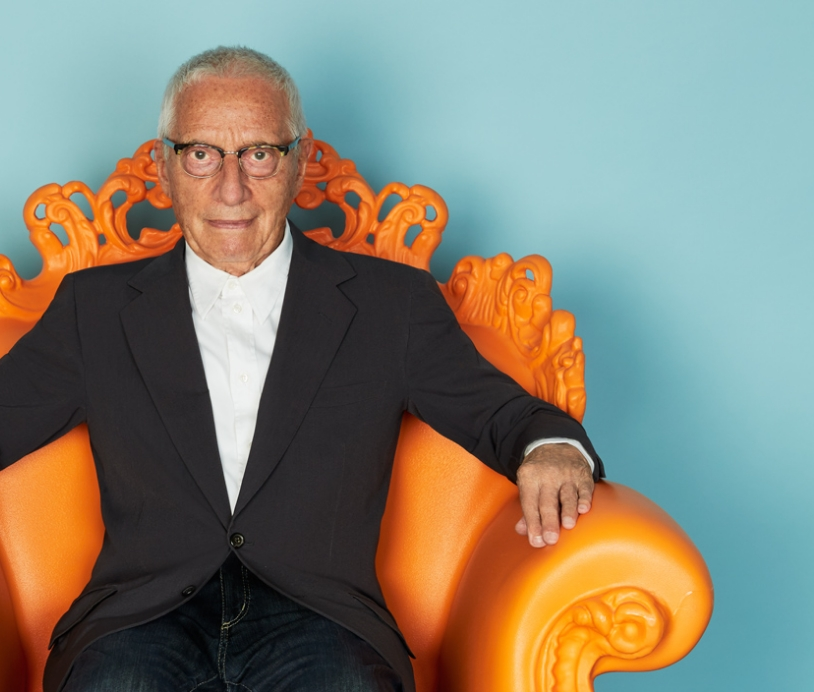

이탈리아의 건축과 디자인 대부로 불리는
건축가이자 디자이너로써
포스트 모더니즘의 선구자이자
대명사

출생 1931년 8월 16일
사망 2019년 2월18일 (향년 87세)
1931년 이탈리아 밀라노에서 태어나 1959년에 밀라노 폴리테크니코 대학 건축학부를 졸업한
그는
1980-1985년에는 도무스 편집장을 역임하고 프루스트 의자,
그로닝겐 뮤지엄등 포스트 모더니즘의
대표적 작품을 만들며 현대 디자인의 판도를 바꾸었다.
1978년 멘디니는 기존에 있던 디자인이나 추상
적 형태를 조합해
새로운 의미를 갖는 리디자인 개념을 프루스트 의자로 만들여 보였다.
이 의자는 그
의 실험적인 시도가 단지 실험이 아니라
현실적 디자인 논리로도 가능하다는 것을 입증하고 있다.
르네
상스 시대가 인간의 가치와 감수성을 예술로 표현했듯
멘디니의 공헌이라고 한다면 상업성과 기능성
에 가려 주목받지 못했던
‘가치’와 ‘감수성’등을 디자인 중심에 자리 잡게 했다는 것이다.
현재 까르띠
에, 바쉐론 콘스탄틴, 슈프림, 에르메스, 스와로브스키 같은 세계적 기업과도 함께 일하고 있다.
2022년 밀라노 명예의 전당 헌액
2017년 A&W-올해의 디자이너상
2014년 유로피안 건축가상
1979년·1981년·2014년 황금콤파스상
프랑스 문화예술 공로훈장 기사장
2014년에는 건축 및 디자인에 대한 높은 기준을 세우고 휴머니즘이 가미된 건축 예술의
환경을 조성한 건축가
로써의 공헌을 인증받아 영예로운 유로피안 건축가상을 수상하였다.
그는 2017년에 "디자인의 오스카상"으로
간주되는 A&W 올해의 디자이너상을 수상했다.
2022년에는 이탈리아 밀라노 2022 명예의 전당(FAMEDIO OF MILAN - MONUMENTAL CEMETERY)에
헌액
되었다. 역대 헌액자로는 오페라의 거장 쥬세페 베르디(Giuseppe Verdi)와
20세기를 대표하는 미학자 겸 소설
가 움베르토 에코(Umberto Eco), 명품 패션 브랜드 ‘베르사체’의
설립자 지안니 베르사체 (Gianni Versace)를
비롯, 세계적인 성악가 루치아노
파바로티(Luciano Pavarotti)등이 있다.